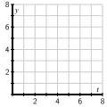

Section 7.3 Euler's method
Motivating Questions
What is Euler's method and how can we use it to approximate the solution to an initial value problem?
How accurate is Euler's method?
In Section 7.2, we saw how a slope field can be used to sketch solutions to a differential equation. In particular, the slope field is a plot of a large collection of tangent lines to a large number of solutions of the differential equation, and we sketch a single solution by simply following these tangent lines. With a little more thought, we can use this same idea to approximate numerically the solutions of a differential equation.
Preview Activity 7.3.1.
Consider the initial value problem
Use the differential equation to find the slope of the tangent line to the solution \(y(t)\) at \(t=0\text{.}\) Then use the given initial value to find the equation of the tangent line at \(t=0\text{.}\)
-
Sketch the tangent line on the axes provided in Figure 7.3.1 on the interval \(0\leq t\leq 2\) and use it to approximate \(y(2)\text{,}\) the value of the solution at \(t=2\text{.}\)

Figure 7.3.1. Grid for plotting the tangent line. Assuming that your approximation for \(y(2)\) is the actual value of \(y(2)\text{,}\) use the differential equation to find the slope of the tangent line to \(y(t)\) at \(t=2\text{.}\) Then, write the equation of the tangent line at \(t=2\text{.}\)
Add a sketch of this tangent line on the interval \(2\leq t\leq 4\) to your plot Figure 7.3.1; use this new tangent line to approximate \(y(4)\text{,}\) the value of the solution at \(t=4\text{.}\)
Repeat the same step to find an approximation for \(y(6)\text{.}\)
Subsection 7.3.1 Euler's Method
Preview Activity 7.3.1 demonstrates an algorithm known as Euler's 1 Method, which generates a numerical approximation to the solution of an initial value problem. In this algorithm, we will approximate the solution by taking horizontal steps of a fixed size that we denote by \(\Delta t\text{.}\)
Before explaining the algorithm in detail, let's remember how we compute the slope of a line: the slope is the ratio of the vertical change to the horizontal change, as shown in Figure 7.3.2.
In other words, \(m = \frac{\Delta y}{\Delta t}\text{.}\) Solving for \(\Delta y\text{,}\) we see that the vertical change is the product of the slope and the horizontal change, or

Now, suppose that we would like to solve the initial value problem
There is an algorithm by which we can find an algebraic formula for the solution to this initial value problem, and we can check that this solution is \(y(t) = t -1 + 2e^{-t}\text{.}\) But we are instead interested in generating an approximate solution by creating a sequence of points \((t_i, y_i)\text{,}\) where \(y_i\approx y(t_i)\text{.}\) For this first example, we choose \(\Delta t = 0.2\text{.}\)
Since we know that \(y(0) = 1\text{,}\) we will take the initial point to be \((t_0,y_0) = (0,1)\) and move horizontally by \(\Delta t = 0.2\) to the point \((t_1,y_1)\text{.}\) Thus, \(t_1=t_0+\Delta t = 0.2\text{.}\) Now, the differential equation tells us that the slope of the tangent line at this point is
so to move along the tangent line by taking a horizontal step of size \(\Delta t=0.2\text{,}\) we must also move vertically by
We then have the approximation \(y(0.2) \approx y_1= y_0 + \Delta y = 1 - 0.2 = 0.8\text{.}\) At this point, we have executed one step of Euler's method, as seen graphically in Figure 7.3.3.

Now we repeat this process: at \((t_1,y_1) = (0.2,0.8)\text{,}\) the differential equation tells us that the slope is
If we move forward horizontally by \(\Delta t\) to \(t_2=t_1+\Delta = 0.4\text{,}\) we must move vertically by
We consequently arrive at \(y_2=y_1+\Delta y = 0.8-0.12 = 0.68\text{,}\) which gives \(y(0.2)\approx 0.68\text{.}\) Now we have completed the second step of Euler's method, as shown in Figure 7.3.4.

If we continue in this way, we may generate the points \((t_i, y_i)\) shown in Figure 7.3.5. Because we can find a formula for the actual solution \(y(t)\) to this differential equation, we can graph \(y(t)\) and compare it to the points generated by Euler's method, as shown in Figure 7.3.6.


Because we need to generate a large number of points \((t_i,y_i)\text{,}\) it is convenient to organize the implementation of Euler's method in a table as shown. We begin with the given initial data.
| \(t_i\) | \(y_i\) | \(dy/dt\) | \(\Delta y\) |
| \(0.0000\) | \(1.0000\) |
From here, we compute the slope of the tangent line \(m=dy/dt\) using the formula for \(dy/dt\) from the differential equation, and then we find \(\Delta y\text{,}\) the change in \(y\text{,}\) using the rule \(\Delta y = m\Delta t\text{.}\)
| \(t_i\) | \(y_i\) | \(dy/dt\) | \(\Delta y\) |
| \(0.0000\) | \(1.0000\) | \(-1.0000\) | \(-0.2000\) |
Next, we increase \(t_i\) by \(\Delta t\) and \(y_i\) by \(\Delta y\) to get
| \(t_i\) | \(y_i\) | \(dy/dt\) | \(\Delta y\) |
| \(0.0000\) | \(1.0000\) | \(-1.0000\) | \(-0.2000\) |
| \(0.2000\) | \(0.8000\) |
We continue the process for however many steps we decide, eventually generating a table like Table 7.3.7.
| \(t_i\) | \(y_i\) | \(dy/dt\) | \(\Delta y\) |
| \(0.0000\) | \(1.0000\) | \(-1.0000\) | \(-0.2000\) |
| \(0.2000\) | \(0.8000\) | \(-0.6000\) | \(-0.1200\) |
| \(0.4000\) | \(0.6800\) | \(-0.2800\) | \(-0.0560\) |
| \(0.6000\) | \(0.6240\) | \(-0.0240\) | \(-0.0048\) |
| \(0.8000\) | \(0.6192\) | \(0.1808\) | \(0.0362\) |
| \(1.0000\) | \(0.6554\) | \(0.3446\) | \(0.0689\) |
| \(1.2000\) | \(0.7243\) | \(0.4757\) | \(0.0951\) |
Activity 7.3.2.
Consider the initial value problem
-
Use Euler's method with \(\Delta t = 0.2\) to approximate the solution at \(t_i = 0.2, 0.4, 0.6, 0.8\text{,}\) and \(1.0\text{.}\) Record your work in the following table, and sketch the points \((t_i, y_i)\) on the axes provided.
Table 7.3.8. Table for recording results of Euler's method. \(t_i\) \(y_i\) \(dy/dt\) \(\Delta y\) \(0.0000\) \(0.0000\) \(0.2000\) \(0.4000\) \(0.6000\) \(0.8000\) \(1.0000\) 
Figure 7.3.9. Grid for plotting points generated by Euler's method. Find the exact solution to the original initial value problem and use this function to find the error in your approximation at each one of the points \(t_i\text{.}\)
Explain why the value \(y_5\) generated by Euler's method for this initial value problem produces the same value as a left Riemann sum for the definite integral \(\int_0^1 (2t-1)~dt\text{.}\)
How would your computations differ if the initial value was \(y(0) = 1\text{?}\) What does this mean about different solutions to this differential equation?
Activity 7.3.3.
Consider the differential equation \(\frac{dy}{dt} = 6y-y^2\text{.}\)
-
Sketch the slope field for this differential equation on the axes provided in Figure 7.3.10.
Figure 7.3.10. Grid for plotting the slope field of the given differential equation. Identify any equilibrium solutions and determine whether they are stable or unstable.
What is the long-term behavior of the solution that satisfies the initial value \(y(0) = 1\text{?}\)
-
Using the initial value \(y(0) = 1\text{,}\) use Euler's method with \(\Delta t = 0.2\) to approximate the solution at \(t_i = 0.2, 0.4, 0.6, 0.8\text{,}\) and \(1.0\text{.}\) Record your results in Table 7.3.11 and sketch the corresponding points \((t_i, y_i)\) on the axes provided in Figure 7.3.12. Note the different horizontal scale on the axes in Figure 7.3.12 compared to Figure 7.3.10.
Table 7.3.11. Table for recording results of Euler's method with \(\Delta t = 0.2\text{.}\) \(t_i\) \(y_i\) \(dy/dt\) \(\Delta y\) \(0.0\) \(1.0000\) \(0.2\) \(0.4\) \(0.6\) \(0.8\) \(1.0\) 
Figure 7.3.12. Axes for plotting the results of Euler's method. What happens if we apply Euler's method to approximate the solution with \(y(0) = 6\text{?}\)
Subsection 7.3.2 The error in Euler's method
Since we are approximating the solutions to an initial value problem using tangent lines, we should expect that the error in the approximation will be smaller when the step size is smaller. Consider the initial value problem
whose solution we can easily find.
The question posed by this initial value problem is “what function do we know that is the same as its own derivative and has value 1 when \(t=0\text{?}\)” It is not hard to see that the solution is \(y(t) = e^t\text{.}\) We now apply Euler's method to approximate \(y(1) = e\) using several values of \(\Delta t\text{.}\) These approximations will be denoted by \(E_{\Delta t}\text{,}\) and we'll use them to see how accurate Euler's Method is.
To begin, we apply Euler's method with a step size of \(\Delta t = 0.2\text{.}\) In that case, we find that \(y(1) \approx E_{0.2} = 2.4883\text{.}\) The error is therefore
Repeatedly halving \(\Delta t\) gives the following results, expressed in both tabular and graphical form.
| \(\Delta t\) | \(E_{\Delta t}\) | Error |
| \(0.200\) | \(2.4883\) | \(0.2300\) |
| \(0.100\) | \(2.5937\) | \(0.1245\) |
| \(0.050\) | \(2.6533\) | \(0.0650\) |
| \(0.025\) | \(2.6851\) | \(0.0332\) |

Notice, both numerically and graphically, that the error is roughly halved when \(\Delta t\) is halved. This example illustrates the following general principle.
If Euler's method is used to approximate the solution to an initial value problem at a point \(\overline{t}\text{,}\) then the error is proportional to \(\Delta t\text{.}\) That is,
for some constant of proportionality \(K\text{.}\)
Subsection 7.3.3 Summary
Euler's method is an algorithm for approximating the solution to an initial value problem by following the tangent lines while we take horizontal steps across the \(t\)-axis.
If we wish to approximate \(y(\overline{t})\) for some fixed \(\overline{t}\) by taking horizontal steps of size \(\Delta t\text{,}\) then the error in our approximation is proportional to \(\Delta t\text{.}\)
Exercises 7.3.4 Exercises
1. A few steps of Euler's method.
Consider the differential equation \(y'=-x-y\text{.}\)
Use Euler's method with \(\Delta x=0.1\) to estimate \(y\) when \(x=1.4\) for the solution curve satisfying
\(y(1)=1\) : Euler's approximation gives \(y(1.4)\approx\)
Use Euler's method with \(\Delta x=0.1\) to estimate \(y\) when \(x=2.4\) for the solution curve satisfying \(y(1) = 0\) : Euler's approximation gives \(y(2.4)\approx\)
2. Using Euler's method for a solution of \(y'=4y\).
Consider the solution of the differential equation \(y' = y\) passing through \(y(0) = 0.5\text{.}\)
A. Sketch the slope field for this differential equation, and sketch the solution passing through the point (0,0.5).
B. Use Euler's method with step size \(\Delta x=0.2\) to estimate the solution at \(x=0.2,0.4,\ldots,1\text{,}\) using these to fill in the following table. (Be sure not to round your answers at each step!)
| \(x =\) | 0 | 0.2 | 0.4 | 0.6 | 0.8 | 1.0 |
| \(y\approx\) | 0.5 |
C. Plot your estimated solution on your slope field. Compare the solution and the slope field. Is the estimated solution an over or under estimate for the actual solution?
over
under
D. Check that \(y = 0.5 e^{1 x}\) is a solution to \(y' = y\) with \(y(0) = 0.5\text{.}\)
3. Using Euler's method with different time steps.
Use Euler's method to solve
with initial value \(B=1500\) when \(t=0\) .
A. \(\Delta t = 1\) and 1 step: \(B(1) \approx\)
B. \(\Delta t = 0.5\) and 2 steps: \(B(1) \approx\)
C. \(\Delta t = 0.25\) and 4 steps: \(B(1) \approx\)
D. Suppose \(B\) is the balance in a bank account earning interest. Be sure that you can explain why the result of your calculation in part (a) is equivalent to compounding the interest once a year instead of continuously. Then interpret the result of your calculations in parts (b) and (c) in terms of compound interest.
4.
Newton's Law of Cooling says that the rate at which an object, such as a cup of coffee, cools is proportional to the difference in the object's temperature and room temperature. If \(T(t)\) is the object's temperature and \(T_r\) is room temperature, this law is expressed at
where \(k\) is a constant of proportionality. In this problem, temperature is measured in degrees Fahrenheit and time in minutes.
Two calculus students, Alice and Bob, enter a 70\(^\circ\) classroom at the same time. Each has a cup of coffee that is 100\(^\circ\text{.}\) The differential equation for Alice has a constant of proportionality \(k=0.5\text{,}\) while the constant of proportionality for Bob is \(k=0.1\text{.}\) What is the initial rate of change for Alice's coffee? What is the initial rate of change for Bob's coffee?
What feature of Alice's and Bob's cups of coffee could explain this difference?
-
As the heating unit turns on and off in the room, the temperature in the room is
\begin{equation*} T_r=70+10\sin t\text{.} \end{equation*}Implement Euler's method with a step size of \(\Delta t = 0.1\) to approximate the temperature of Alice's coffee over the time interval \(0\leq t\leq 50\text{.}\) This will most easily be performed using a spreadsheet such as Excel. Graph the temperature of her coffee and room temperature over this interval.
In the same way, implement Euler's method to approximate the temperature of Bob's coffee over the same time interval. Graph the temperature of his coffee and room temperature over the interval.
Explain the similarities and differences that you see in the behavior of Alice's and Bob's cups of coffee.
5.
We have seen that the error in approximating the solution to an initial value problem is proportional to \(\Delta t\text{.}\) That is, if \(E_{\Delta t}\) is the Euler's method approximation to the solution to an initial value problem at \(\overline{t}\text{,}\) then
for some constant of proportionality \(K\text{.}\)
In this problem, we will see how to use this fact to improve our estimates, using an idea called accelerated convergence.
-
We will create a new approximation by assuming the error is exactly proportional to \(\Delta t\text{,}\) according to the formula
\begin{equation*} y(\overline{t})-E_{\Delta t} =K\Delta t\text{.} \end{equation*}Using our earlier results from the initial value problem \(dy/dt = y\) and \(y(0)=1\) with \(\Delta t = 0.2\) and \(\Delta t = 0.1\text{,}\) we have
\begin{align*} y(1) - 2.4883 =\mathstrut \amp 0.2K\\ y(1) - 2.5937 =\mathstrut \amp 0.1K\text{.} \end{align*}This is a system of two linear equations in the unknowns \(y(1)\) and \(K\text{.}\) Solve this system to find a new approximation for \(y(1)\text{.}\) (You may remember that the exact value is \(y(1) = e = 2.71828\ldots\text{.}\))
Use the other data, \(E_{0.05} = 2.6533\) and \(E_{0.025} = 2.6851\) to do similar work as in (a) to obtain another approximation. Which gives the better approximation? Why do you think this is?
-
Let's now study the initial value problem
\begin{equation*} \frac{dy}{dt} = t-y, \ y(0) = 0\text{.} \end{equation*}Approximate \(y(0.3)\) by applying Euler's method to find approximations \(E_{0.1}\) and \(E_{0.05}\text{.}\) Now use the idea of accelerated convergence to obtain a better approximation. (For the sake of comparison, you want to note that the actual value is \(y(0.3) = 0.0408\text{.}\))
6.
In this problem, we'll modify Euler's method to obtain better approximations to solutions of initial value problems. This method is called the Improved Euler's method.
In Euler's method, we walk across an interval of width \(\Delta t\) using the slope obtained from the differential equation at the left endpoint of the interval. Of course, the slope of the solution will most likely change over this interval. We can improve our approximation by trying to incorporate the change in the slope over the interval.
Let's again consider the initial value problem \(dy/dt = y\) and \(y(0) = 1\text{,}\) which we will approximate using steps of width \(\Delta t = 0.2\text{.}\) Our first interval is therefore \(0\leq t \leq 0.2\text{.}\) At \(t=0\text{,}\) the differential equation tells us that the slope is 1, and the approximation we obtain from Euler's method is that \(y(0.2)\approx y_1= 1+ 1(0.2)= 1.2\text{.}\)
This gives us some idea for how the slope has changed over the interval \(0\leq t\leq 0.2\text{.}\) We know the slope at \(t=0\) is 1, while the slope at \(t=0.2\) is 1.2, trusting in the Euler's method approximation. We will therefore refine our estimate of the initial slope to be the average of these two slopes; that is, we will estimate the slope to be \((1+1.2)/2 = 1.1\text{.}\) This gives the new approximation \(y(1) = y_1 = 1 + 1.1(0.2) = 1.22\text{.}\)
The first few steps look like what is found in Table 7.3.15.
| \(t_i\) | \(y_i\) | Slope at \((t_{i+1},y_{i+1})\) | Average slope |
| \(0.0\) | \(1.0000\) | \(1.2000\) | \(1.1000\) |
| \(0.2\) | \(1.2200\) | \(1.4640\) | \(1.3420\) |
| \(0.4\) | \(1.4884\) | \(1.7861\) | \(1.6372\) |
| \(\vdots\) | \(\vdots\) | \(\vdots\) | \(\vdots\) |
Continue with this method to obtain an approximation for \(y(1) = e\text{.}\)
Repeat this method with \(\Delta t = 0.1\) to obtain a better approximation for \(y(1)\text{.}\)
We saw that the error in Euler's method is proportional to \(\Delta t\text{.}\) Using your results from parts (a) and (b), what power of \(\Delta t\) appears to be proportional to the error in the Improved Euler's Method?